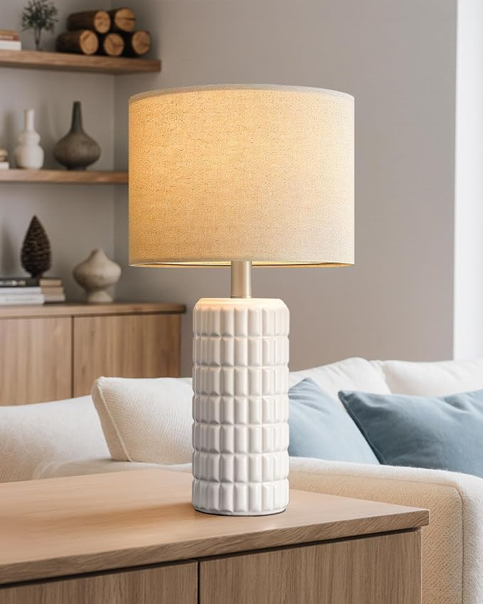
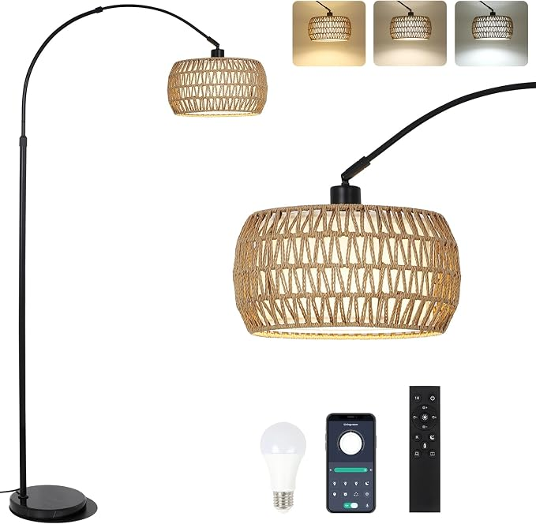

Your Small Bedroom Isn't Small. It's Badly Lit.
A ceiling light can leave the corners dark, and your eye reads those dark edges as where the room stops. The floor area has not changed, but three carefully placed light sources can make the same bedroom read as wider and cosier.
The short version
- Put one low light about 40–60 cm above the floor beside the bed, one standing-height lamp about 1.2–1.6 m high in the far corner, and one overhead light that throws pattern rather than a flat disc.
- Start with a 2700K bulb and roughly 800–1,100 lumens per lamp for a warm bedroom setup; use shades that spread light instead of creating one bright spot.
- Measure the actual cord route to the socket before buying a lamp, and leave roughly 10–20 cm of slack rather than stretching the cord taut.
- In a shared room, a teenager's room or a child's room, solve the darkest 1–2 corners first before changing the furniture layout.
As an Amazon Associate I earn from qualifying purchases. Links below are affiliate links (#ad) - they cost you nothing extra. Nothing here is a paid placement, and no brand sees this page before it goes up.
Light the edges and the room reads wider
The familiar mistake is putting all the brightness in the middle of the ceiling. The centre becomes visually loud while the four corners fade away, so the dark boundary makes the bedroom feel as if it ends sooner than it really does. This matters particularly when a bed, wardrobe or desk already occupies much of the available floor. As a practical test, stand in the doorway with the ceiling light on and look for any corner that is at least noticeably darker than the centre; that is the first place to add light.
Spread the light instead: keep one source low beside the bed, add another roughly 1.2–1.6 m above the floor in the far corner, and use the ceiling for patterned or softened light rather than a flat disc. Aim to have three distinct pools of light rather than one bright pool in the centre. The furniture can stay exactly where it is; the useful change is that more of the existing walls and corners remain visible.


Three lamps can beat one brighter lamp
For two people sharing a room, this arrangement also avoids making the ceiling fitting responsible for every task. A low bedside lamp placed 40–60 cm above the floor gives light where you read or get ready for bed, while a separate corner source stops the opposite side of the room disappearing into shadow. In a room for a child or teenager, the same principle can make a compact bed-and-desk layout feel less boxed in without sacrificing floor space.
Do not solve darkness by simply making the central fitting harsher. A very bright centre can leave the corners visually dead, whereas a shade that spreads light and an overhead fitting that throws a pattern give the eye more points to read. As a starting point, try 800–1,100 lumens at each of the three positions, then reduce the bedside lamp if it feels too bright for winding down. The room is still the same size, but its boundaries are easier to see.
Check the light before you buy the lamp
Check the bulb at 2700K. Use 2700K as the buying threshold for the warm bedroom light this arrangement needs, rather than choosing a bulb by brightness alone. For a typical bedside or corner lamp, 800–1,100 lumens is a useful starting range; if the shade is very opaque, choose toward the upper end because less light escapes into the room. A different colour temperature can change the feel of the room even when the lamp is in the right place.
Check how the shade spreads light. Reject a shade that concentrates the useful light into one small patch when the problem is dark corners. For the overhead position, look for a shade that throws a pattern rather than presenting a flat disc of light. A simple buying test is to stand 1–2 m from the lamp and check whether light is visible on the surrounding wall, not just directly underneath the fitting.
Check the cord against the real route. Measure from the intended lamp position to the socket, following the route the cord will actually take, before buying. Add 10–20 cm of slack so the cable is not stretched taut. A lamp that looks right beside the bed or in the far corner is not a practical solution if its cord cannot reach that position safely and neatly.
What we would actually buy
 Our illustration of the general look, not the actual product
Our illustration of the general look, not the actual productWoven rattan pendant
This works overhead because its woven shade can throw pattern instead of creating the flat-disc effect that leaves the room visually heavy at the centre. For a typical bedroom, pair it with a 2700K, roughly 800–1,100-lumen bulb and check from 1–2 m away that the shade creates useful light on nearby walls. It is not for someone who wants the most concentrated, task-focused light from the ceiling.
Best for: warm, textured overhead light
View pendant →paid link
Single ceramic table lamp, white
This is suited to the low bedside position, putting a light source where the ceiling fitting cannot illuminate the bed evenly. Aim for a lamp sitting 40–60 cm above the floor and pair it with a 2700K, roughly 800–1,100-lumen bulb for the warm starting point described here. Measure the cord route and leave 10–20 cm of slack. It is not for someone trying to light the whole room from one lamp.
Best for: soft bedside light in a compact room
View on Amazon →paid link
Arc floor lamp with adjustable colour temperature
This suits the far corner because a standing-height source can bring a previously dark edge back into view, while adjustable colour temperature lets you change the character of the light. Position the useful light source around 1.2–1.6 m above the floor and start near 2700K in the evening. Check that the arc can stand where it will illuminate the corner without obstructing the room's existing layout and that its cord reaches the socket with 10–20 cm of slack. It is not for someone who has no usable floor position for a standing lamp.
Best for: flexible light colour and focused corner lighting
Buy on Amazon →paid linkIf you only do one thing
First, switch off the ceiling light and identify the darkest corner from the doorway. Put a low lamp 40–60 cm above the floor beside the bed and a standing-height lamp 1.2–1.6 m high in that far corner before changing the furniture, then add or adjust the overhead light to reach roughly three balanced pools of light and judge the room again.
How we choose
We look for pieces that change how a small room works, not the cheapest option and not the most photographed one. Everything here has to survive a rental: no drilling, no permanent fittings, nothing that needs a second person to install.
Room images on this site are our own illustrations, not photographs of the products. We link to the retailer so you can see the real item.
Written and selected by Rooms and Roads · Updated August 2026 · links checked August 2026